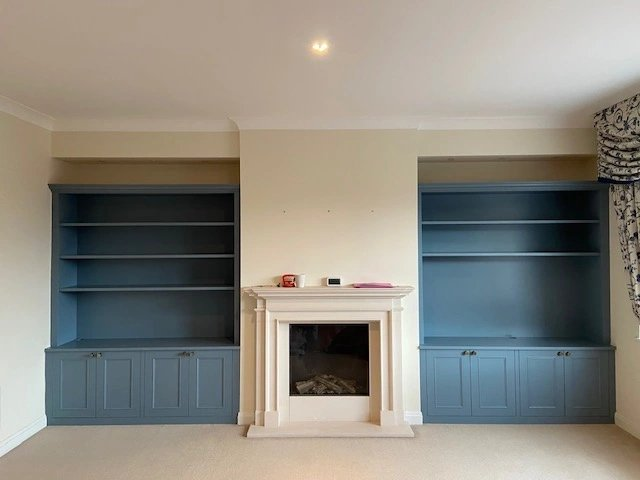
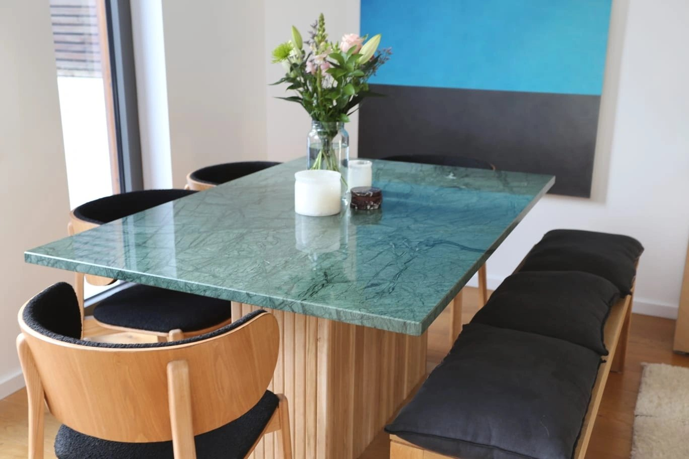
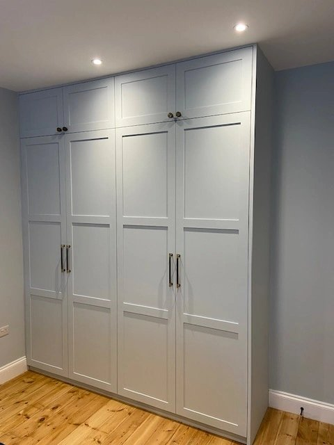
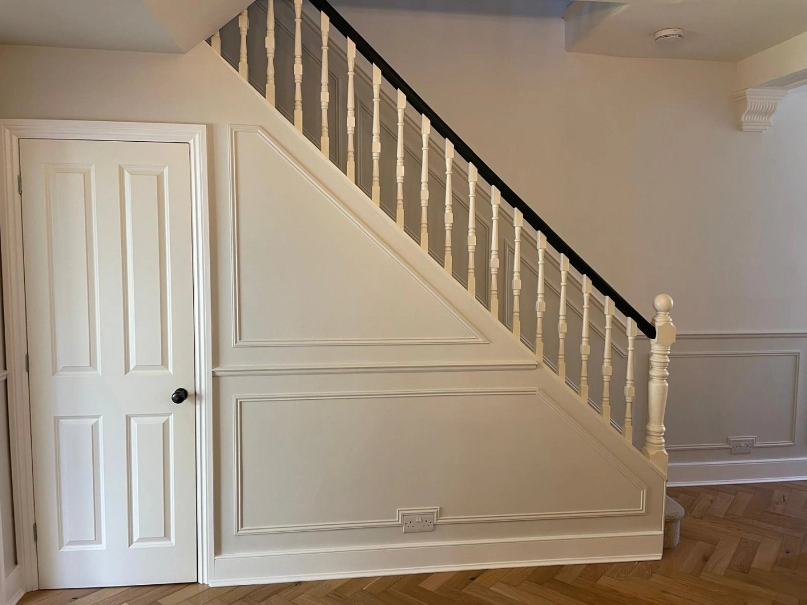
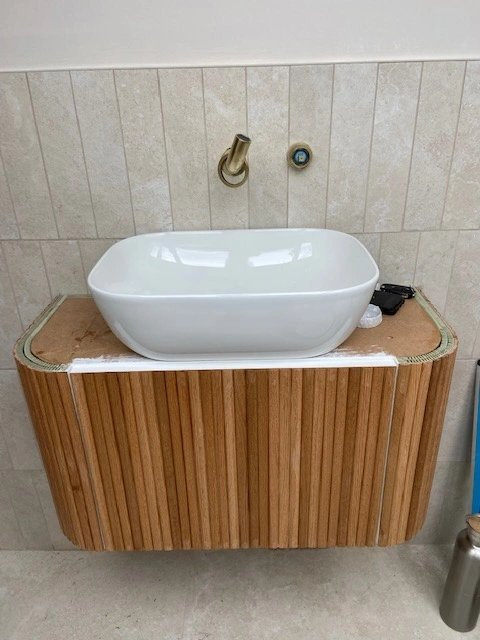

A pair of blue alcove units, bringing balance and useful storage to a living room.
Bespoke carpentry · South West London
Made for your home.
Built around you.
Considered carpentry. Personal spaces.
From a single piece of furniture to a room transformed, we make the most of what makes your home yours.

Featured project / Alcove cabinetryA place for everything
The portfolio / 01—08
Thoughtfully made.
Made to be lived with.
A selection of our work, from fitted storage to one-of-a-kind furniture.

A dining table designed around a piece of marble the client already owned.

A fitted seat that brings storage and a comfortable perch to a bay window.

Full-height fitted wardrobes with panelled doors and drawers at the centre.

An alcove becomes a dedicated work area, with a fitted desk and shelves above.

A wall of shelving, display space and fitted furniture, composed as one piece.

Panelled storage that follows the staircase, making use of an awkward space.

A curved timber vanity brings texture and warmth to a tiled bathroom.
What we do
Good ideas.
Carefully crafted.
Fitted furniture, bespoke storage and the details that bring a home together. Explore our carpentry services and find the right starting point for your project.
Our services